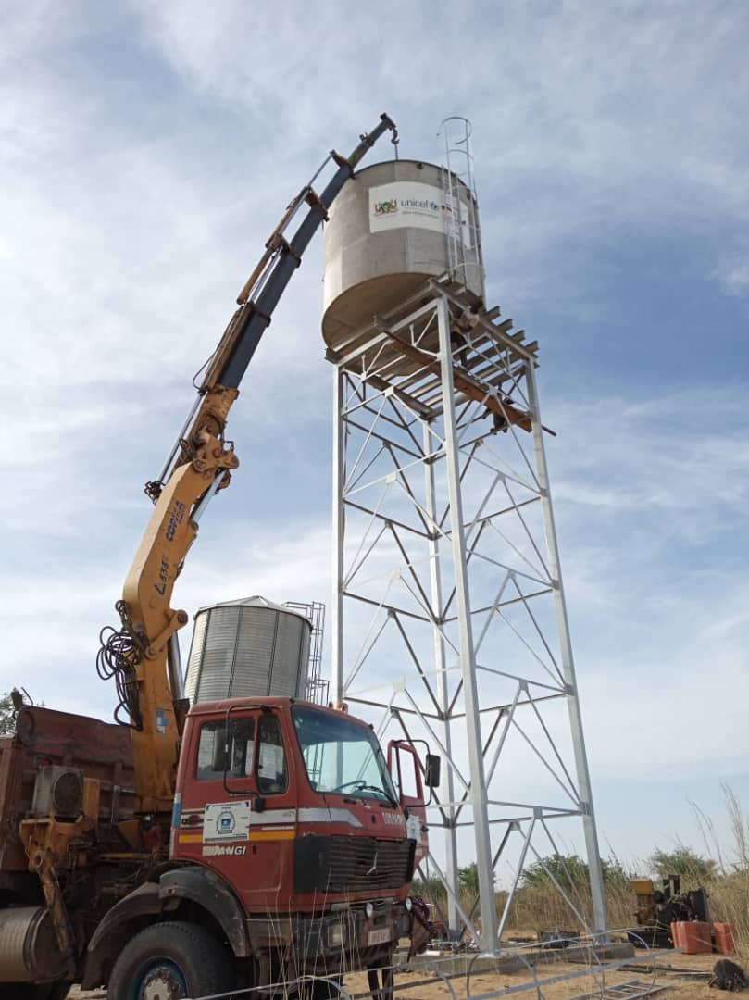
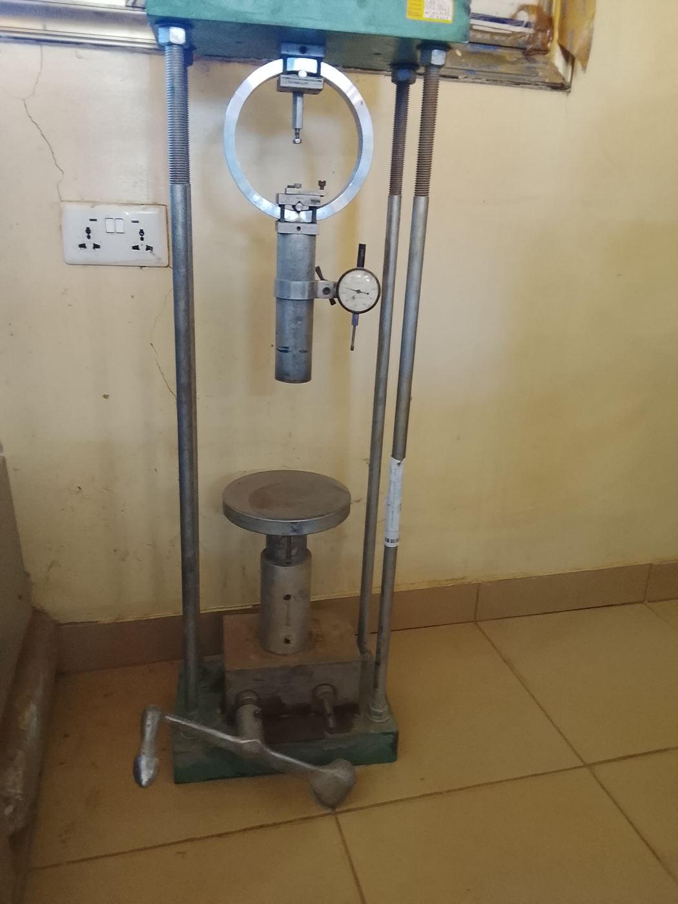
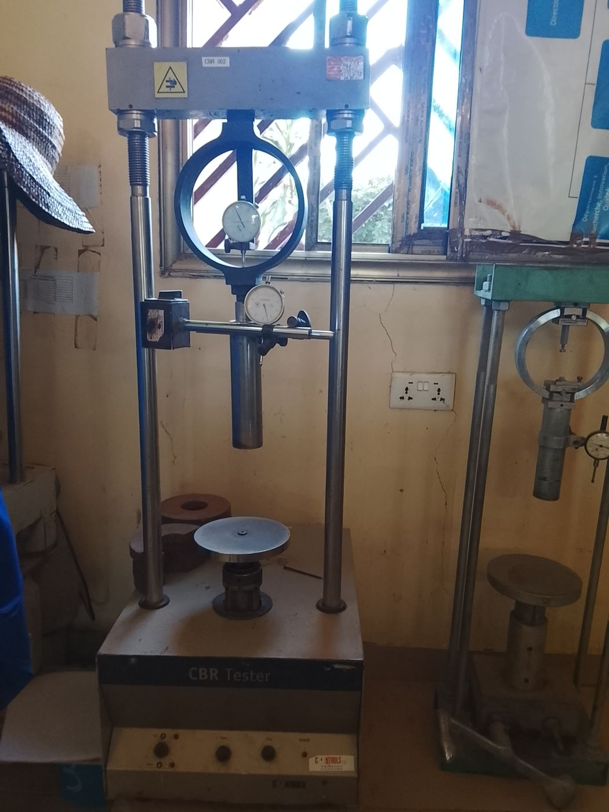
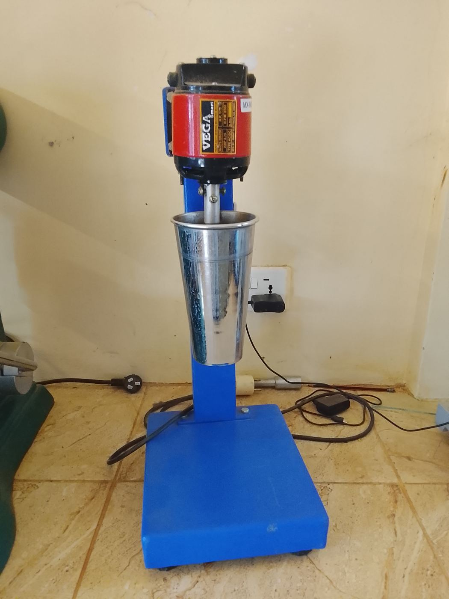
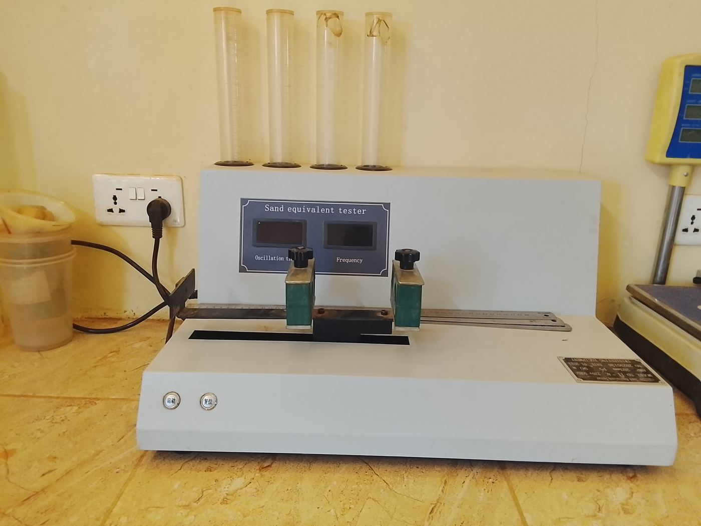

Études et conception
Faisabilité, avant-projets sommaire et détaillé, dimensionnement, dossiers d'appel d'offres, topographie et cartographie.
GéoConsulting est un bureau d'études et de contrôle doté de son propre laboratoire d'essais. Depuis 2011, nous accompagnons les maîtres d'ouvrage publics, les collectivités et les partenaires techniques et financiers, de l'étude de faisabilité à la réception des ouvrages.

L'étude, le contrôle et l'essai sont conduits par les mêmes équipes, sous un système de management intégré. Les hypothèses de calcul sont vérifiées par les mesures du laboratoire, et les mesures alimentent les décisions de chantier.
Faisabilité, avant-projets sommaire et détaillé, dimensionnement, dossiers d'appel d'offres, topographie et cartographie.
Maîtrise d'œuvre, surveillance des travaux, contrôle technique et financier, réception des ouvrages.
Géotechnique, matériaux et métrologie. Essais sur sols, granulats, bétons, bitumes et fondations selon normes NF, EN et ASTM.
Études d'impact environnemental et social, mesures de bruit, de turbidité et de qualité de l'eau, plans de gestion.
Peu de bureaux d'études de la sous-région disposent de leur propre laboratoire. Le nôtre permet de vérifier sur place la portance d'une plateforme, la résistance d'un béton ou la qualité d'un granulat, sans attendre un prestataire extérieur.




Une sélection de projets conduits pour des maîtres d'ouvrage publics et des partenaires internationaux. Le détail contractuel de chaque mission reste disponible sur demande.
Administrations centrales, collectivités locales, agences des Nations unies et bailleurs bilatéraux et multilatéraux.
La démarche qualité est auditée chaque année par un organisme accrédité. Chaque certificat est vérifiable auprès de l'organisme certificateur.
Maîtrise des processus d'étude, validation des livrables à trois niveaux de contrôle et suivi de la satisfaction client.
Prévention des impacts de nos activités, gestion économe des ressources et conformité réglementaire permanente.
Identification et maîtrise des risques professionnels, conditions de travail sûres sur le terrain comme au laboratoire.